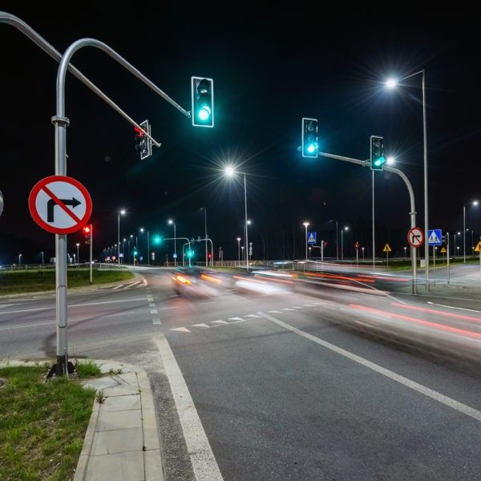

Sensores Rfid e audio

0,8 m/s
Deteção de Ritmo Lento
+Tempo
Extensão Automática
Segurança Ativa
Chega de risco nas travessias urbanas.
Os semáforos tradicionais apenas contam segundos cegos. O SPI analisa o fluxo com visão computacional, detecta o pedestre em vulnerabilidade e adapta o ciclo do sinal sem estrangular o tráfego de veículos.
Tecnologia Smart City
Integração fluida com centrais de tráfego urbano e modernização imediata de avenidas.
Impacto Institucional & ESG
Adequação plena às metas de acessibilidade, reduzindo custos hospitalares por acidentes.
Selo de Qualidade Aprovado
Homologado em estreita parceria técnica com centros de formação e especialistas em trânsito.
🔒 Atendimento direto a órgãos públicos, concessionárias e empresas privadas de infraestrutura.